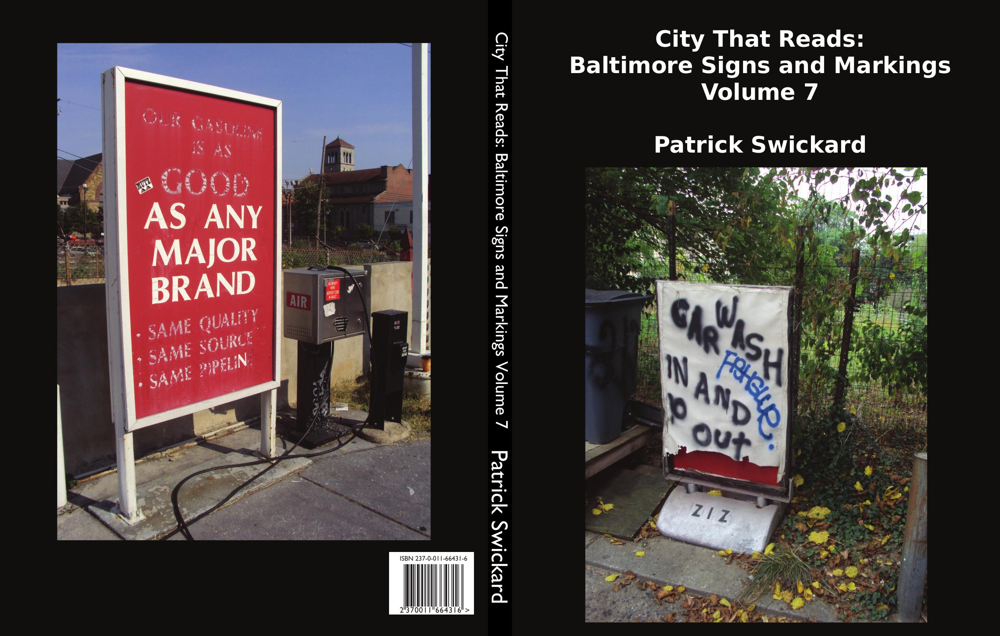
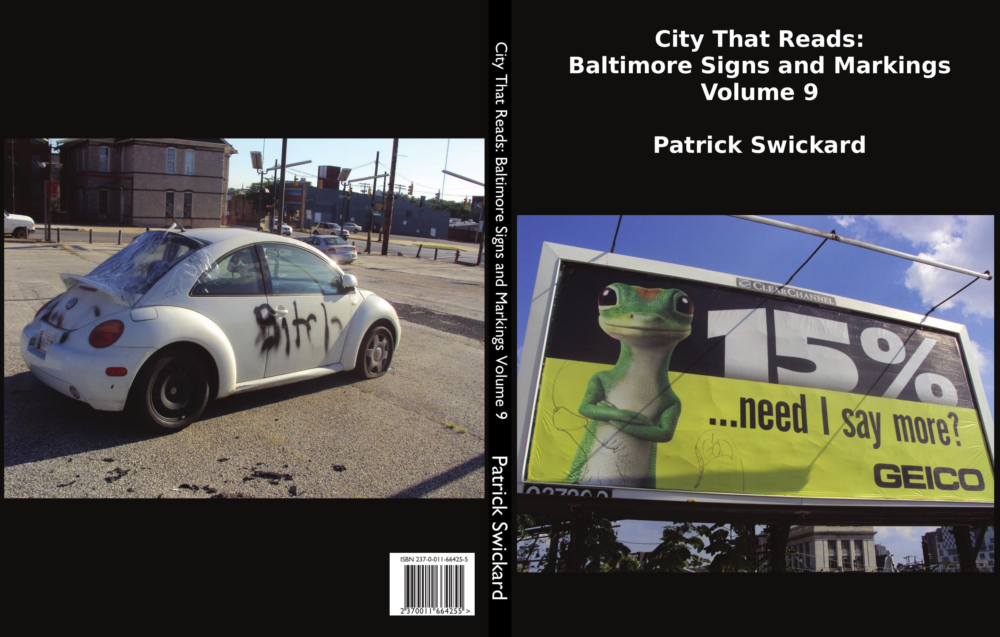
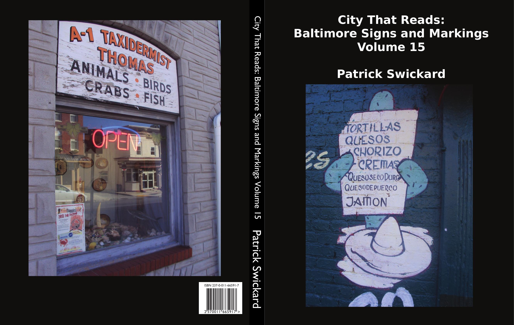
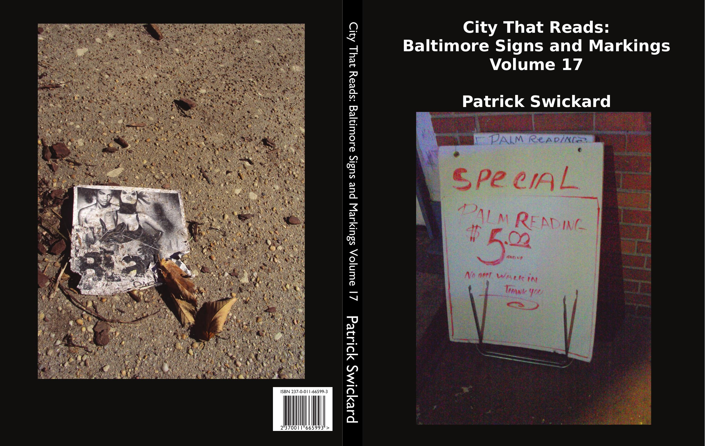
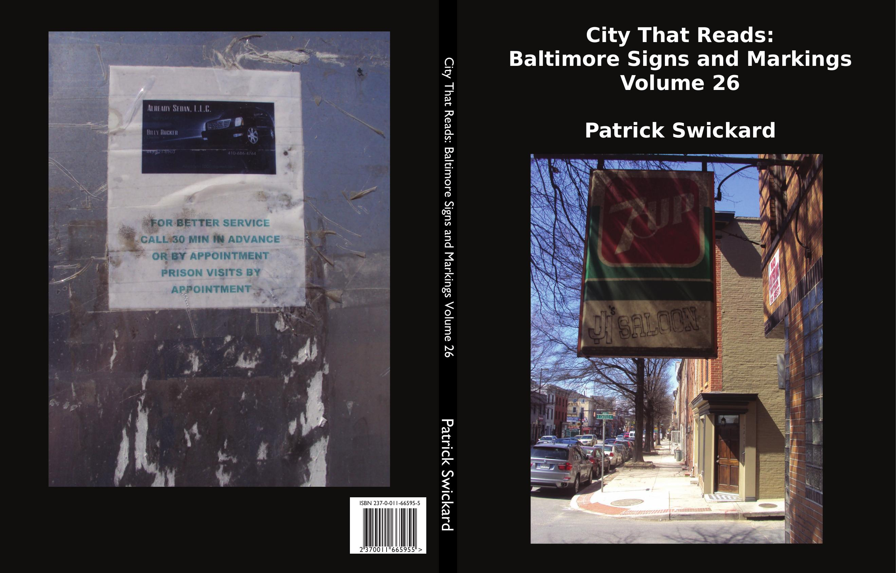
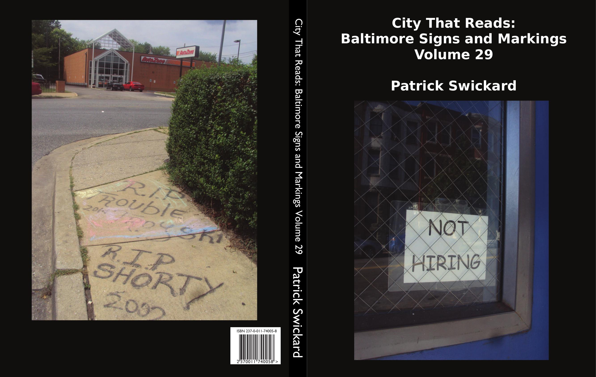
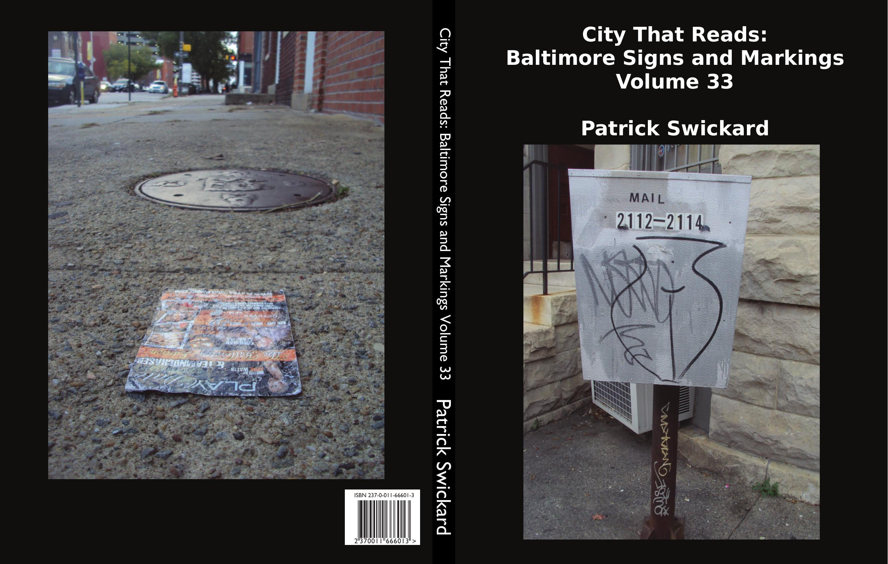
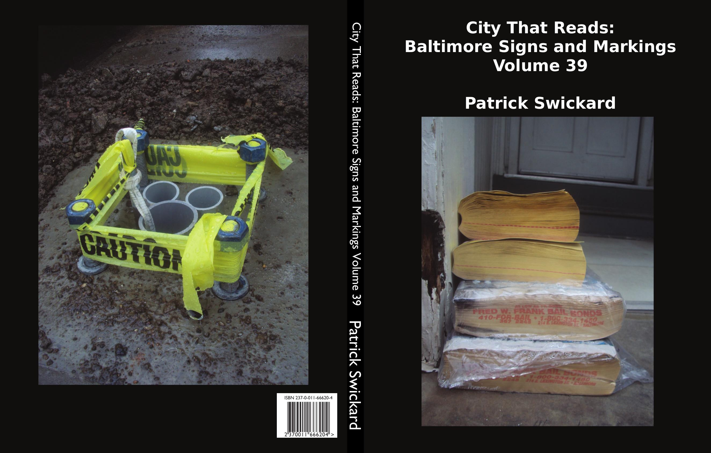

VOLUME 0
VOLUME 0
When I moved to Baltimore in 2012, I was immediately struck by the enormous amount of graffiti I encountered on the streets. One of Baltimore's slogans is "The City That Reads", and I found it somewhat hilarious in light of that how much random graffiti I ended up reading during frequent walks around the city. I moved here without a car, so as a pedestrian I found myself constantly exposed to a barrage of graffiti, signs, posters, and other markings aimed at people walking around town, waiting for buses, or generally just existing on the streets.
In order to battle against the sedentary habits I had as a software developer, I started taking regular walks around the city for exercise. This gave me even more exposure to Baltimore's unique culture with respect to signs and graffiti.
Eventually I started carrying a small cheap portable digital camera along with me to document some of my walks (a Sony DSC-S930 to be exact). This camera was rather rugged, cheap, and durable, and it was small enough to slip into my pocket so I could be discreet when taking pictures. The camera took a beating over the six-plus years I spent taking these photos, and I ended up taking over 30,000 pictures with it. For practical and sentimental reasons I was reluctant to change cameras even when mine started developing a few quirks and flaws.
On my walks around the city, I found myself constantly reading words on the street. I was impressed with how frequently the words we read when we walk around the city affect our inner thoughts and reflect the character of the city overall and of the neighborhoods I found myself strolling through. The words started to seem like a good way of taking the pulse of these locations and the times. Recording this seemed like a worthy endeavor, so I pursued it passionately. I tried to concentrate heavily on the ephemeral parts of Baltimore that could be seen in the signs and markings on the streets. Each of my walks would be documented by date and uploaded to my Flickr account, with each photo accompanied by a caption. Usually the caption would contain the words that stood out to me when the image was captured.
My Flickr account contains well over 300 albums of photos shot for this project. Each album represents a single day's walk around one part of the city. My home base has been Mount Vernon for the entire time I've lived here. Mount Vernon and Station North and Downtown are all pretty well-represented in these photos. But I also worked quite hard to take pictures from as many different parts of the city as I could. I was pretty systematic about this and covered as much of the city as I could, only skipping some of the most remote areas and a few areas where I did not feel safe or comfortable walking around alone and taking pictures. I was able to get pretty thorough coverage of most of the east side of the city, but there are admittedly a lot of gaps southwest of Penn-North beyond Fulton. My apologies for the omissions. Fortunately other photographers with more familiarity and better skills than my own have paid those areas attention in a way I was unable to do.
Unlike a lot of street photographers, I deliberately made an effort to include as few people as possible in my shots. Some people are present in the background in many of them, but they are almost never the focus. This sometimes makes the city look deceptively desolate and empty. But the words in the photos and their ephemeral nature tell a different story. Each of them says to me that someone was here recently and they wanted their voice to be heard by anyone passing by this spot.
I also tried hard not to lean too heavily into capturing the city's beauty or blight. Baltimore has some breathtaking architecture and gorgeous street art, and it also has a lot of physically unsafe and unpleasant looking examples of crumbling infrastructure and vacant buildings. Sometimes the two coexist in the same space. Too much of either can be a bit numbing or heartbreaking. I personally find some of the prettiest things a little bit sad and some of the saddest things a little bit pretty, but I'll let the viewer be the judge. My intent isn't to act as a cheerleader for the city nor a detractor of its woes. And if it were then I would certainly pick a different method of doing that than photography.
Like the city itself, the words we encounter on the street can be playful and funny and hilariously vulgar. Some are artsy and beautiful and creative in sometimes chaotic ways. A lot of them show a sort of stubborn and shabby pride in the city or neighborhood in which they are found. At times they can feel menacing and dangerous or tragic and sad. Some of the words argue with each other or air grievances, giving a sense of conflicts about to burst out any minute. Others of them have a commercial purpose that shows the wants and needs of the area's inhabitants. And some of them hint at a secret life below the surface that can at times be quirky or sinister or just plain weird.
This work is a love letter to the city and a snapshot of what things were like in the city in the era before the pandemic. Baltimore has a notorious reputation as a rough place to live, but also a place that is unexpectedly beloved by a lot of its inhabitants. I've tried and failed many times to put this in words for other people who ask me why I have made this city my home for so long. These photos and the words that accompany them are simply my attempt to pass the mic and let the city speak for itself.
Volumes in series:
VOLUME AZ
VOLUME 0
 VOLUME 1
VOLUME 1

VOLUME 2

VOLUME 3

VOLUME 4

VOLUME 5

VOLUME 6

VOLUME 7

VOLUME 8

VOLUME 9

VOLUME 10

VOLUME 11

VOLUME 12

VOLUME 13

VOLUME 14

VOLUME 15

VOLUME 16

VOLUME 17

VOLUME 18

VOLUME 19

VOLUME 20

VOLUME 21

VOLUME 22

VOLUME 23

VOLUME 24

VOLUME 25

VOLUME 26

VOLUME 27

VOLUME 28

VOLUME 29

VOLUME 30

VOLUME 31

VOLUME 32

VOLUME 33

VOLUME 34

VOLUME 35

VOLUME 36

VOLUME 37

VOLUME 38

VOLUME 39

VOLUME 40

VOLUME 41

VOLUME 42

VOLUME 43

VOLUME 44

VOLUME 45

VOLUME 46

VOLUME 47

VOLUME 48

VOLUME 49

VOLUME 50

CENOTAPHS OF OCEAN CITY (SPECIAL EDITION)